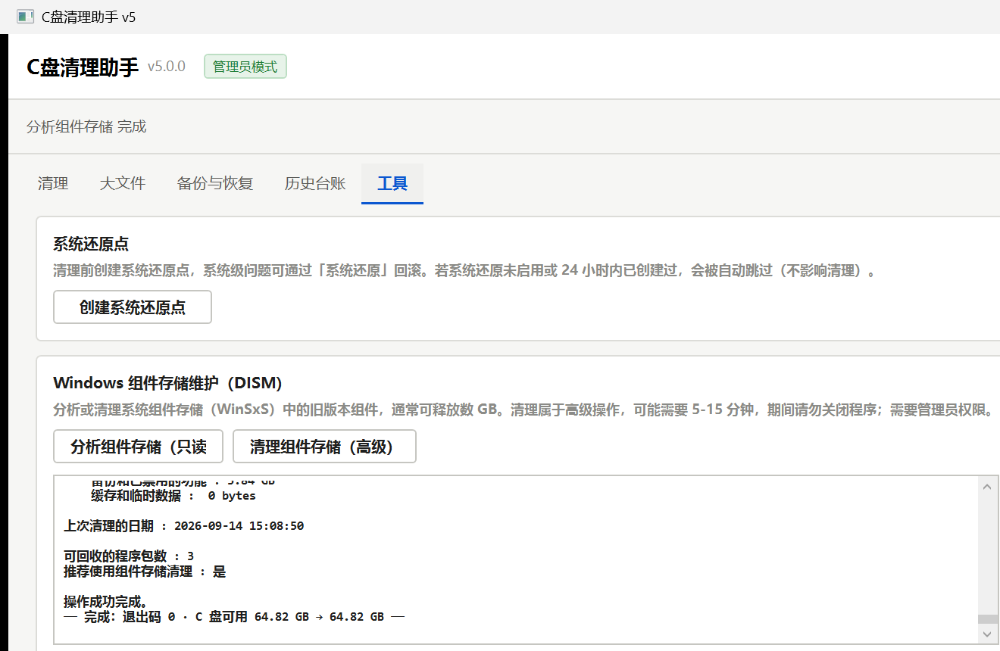

Docs Hub
C盘清理助手 v5.0 · 文档中心
免安装、离线可用、数据不出本机。程序本体是上一级的 C盘清理助手.exe；命令行版在 tools\CleanMasterCli.exe。
五份文档
| 文档 | 内容 |
|---|---|
| 使用说明 | 30 秒上手、界面导览、扫描/清理/恢复/台账、常见问题、安全边界（另附 Markdown 版） |
| 维护与交接手册 | 架构、构建发布、规则库维护、数据文件、排障、测试体系、交接清单（另附 Markdown 版） |
| 性能测试报告 | 新旧对照实测：扫描 7.2×、启动 3.3×、内存 -40%（另附 Markdown 版） |
| 能力对照与借鉴落地清单 | 26 项能力矩阵：已落地 18 / 部分 1 / 不采纳 7（附理由）（另附 Markdown 版） |
| 验证记录与验收清单 | 8 条验收标准逐条对照 + 证据 + 一键复跑指引（另附 Markdown 版） |
界面一览

扫描结果：31 类别按大小排列，安全项默认勾选

清理确认：数量/大小/风险预览与策略选择

备份与恢复：会话管理与恢复入口

工具页：还原点 / DISM / 规则更新 / 设置

工具页：组件存储分析输出（中文正常显示）
安装包与源码
- 标准安装包：
..\C盘清理助手_v5.0.0_安装包_x64.exe（向导式安装，含开始菜单 / 桌面快捷方式 / 完整卸载） - 完整源码、构建脚本与测试脚本：GitHub 仓库（已按交付要求移出本机）
- 性能与验收原始数据：
data\（基准 / 端到端 / 自检 / 安装卸载日志）